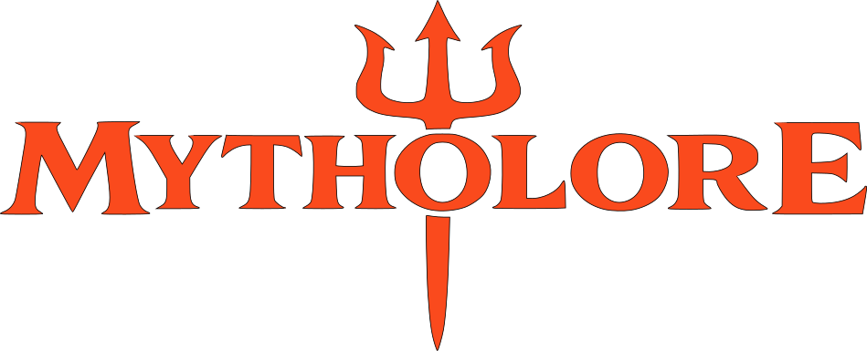

Albums/ Egyptian Mythology/ Pantheon of the Eternal FlameOpen your soul to the endless heavens in “Celestial Veil”, an ambient-progressive metal journey dedicated to Nut, the Egyptian sky goddess — mother of stars, queen of the night, and cosmic guardian of birth and renewal.
Who is Nut?
Nut (pronounced “noot”) is the ancient Egyptian goddess of the sky and heavens, often portrayed as a vast, arched figure bending over the earth, with stars adorning her skin. She is the mother of the sun god Ra, as well as Osiris, Isis, Seth, and Nephthys.
Every night, she swallowed the sun, and every morning, she gave birth to it again — a powerful symbol of resurrection and cosmic continuity. She represents the sacred feminine of the universe, the protector of souls, and the body of the heavens.
Nut: Celestial Veil
I arch above the world in grace
The stars are born within my face
The moon my child, the sun my flame
Each breath of night repeats my name
The heavens stretch beneath my hands
I cradle gods, I birth their plans
My body bends from east to west
To hold the sun and grant it rest
In silence deep, the stars return
And through my womb, the ages burn
I am Nut — celestial veil
The sky that breathes when mortals fail
My arms the vault, my skin the night
I hold the stars, I birth the light
From dusk to dawn, I bend, I soar
The goddess sky forevermore
The world forgets, the world decays
But I remain in endless phase
I swallow Ra at every dusk
And birth him new in morning’s musk
My love is vast, my silence loud
I wrap the world in twilight’s shroud
Each soul that dreams beneath my arc
I bless with visions in the dark
In silence deep, the stars return
And through my womb, the ages burn
I am Nut — celestial veil
The sky that breathes when mortals fail
My arms the vault, my skin the night
I hold the stars, I birth the light
From dusk to dawn, I bend, I soar
The goddess sky forevermore
No sword I lift, no crown I crave
But all the gods my form have graved
I curve through time, I touch the seas
My body hums with galaxies
When you look up, you look through me
I am the sky’s eternity
The final breath, the first to cry
The mother-roof of every sky
In silence deep, the stars return
And through my womb, the ages burn
I am Nut — celestial veil
The sky that breathes when mortals fail
My arms the vault, my skin the night
I hold the stars, I birth the light
From dusk to dawn, I bend, I soar
The goddess sky forevermore
In nebulae and drifting time
I move with stars, I hold the line
The gods ascend, the dead arise
Through sacred breath beneath my skies
So close your eyes and call my name
I'll guide you through the starlit flame
I am Nut, the veil above
The sky that dreams, the sky that loves